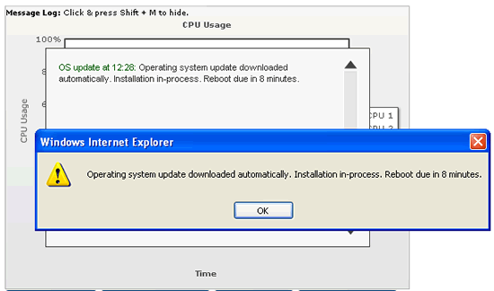
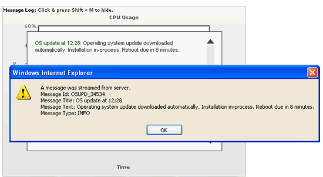

Message Logger > Handling messages in JavaScript |
In our previous examples, we saw how to log the messages streamed from server in the in-built visual logger of the chart. However, FusionWidgets also provides you an option to pass the entire (or partial) message envelope to your custom JavaScript functions present in the page (that contains chart). Here, we'll see examples of the same. |
| Using JavaScript alert() to show streamed messages |
To start with, we'll simply use the JavaScript's native alert function to show messages streamed from server to the client. To do that, we need to tell the chart to stream messages to alert function. We do so by setting: <chart useMessageLog='1' messageGoesToJS='1' messageJSHandler='alert'..> When you now run the chart, you'll see the following message being logged in the visual logger, as well as being passed to the alert function. |
|  |
|
| Using custom function handler and passing all parameters in message envelope |
In the previous example, we've used the in-built alert function of JavaScript. However, you can use any of your custom functions and then define the same as messageJSHandler attribute. Also, in this example only the message text was passed to JavaScript. However, you can pass all parameters from the message envelope to your function by setting: <chart useMessageLog='1' messageGoesToJS='1' messageJSHandler='myFunction' messagePassAllToJS='1'..> Here, we've defined the function handler as myFunction (which is our own custom function) and asked the chart to pass all parameters received (as part of message) to this JavaScript function. A simple implementation of myFunction can look as under (here, we're simply showing the different parameters to the user, concatenated as a string - you can instead use it for your own loggers). |
| function myFunction(strMsgId, strMsgTitle, strMsgText, strMsgType){ //This method is invoked when the chart streams real-time message to JS. //Order of parameters - strMsgId, strMsgTitle, strMsgText, strMsgType //- strMsgId - The ID allotted to each message by your server side code. //- strMsgTitle - Title given to each message by your server side code. //- strMsgText - Text of each message. //- strMsgType - Type of each message - INFO, ERROR, LITERAL or LINK alert("A message was streamed from server. \nMessage Id: " + strMsgId + "\nMessage Title: " + strMsgTitle + "\nMessage Text: " + strMsgText + "\nMessage Type: " + strMsgType); } |
With the server streaming the following data, you'll get an output as shown below: &label=12%3A48%3A43+PM&value=23|54&msgId=OSUPD_34534&msgTitle=OS update at 12:28&msgText=Operating system update downloaded automatically. Installation in-process. Reboot due in 8 minutes. |
|  |